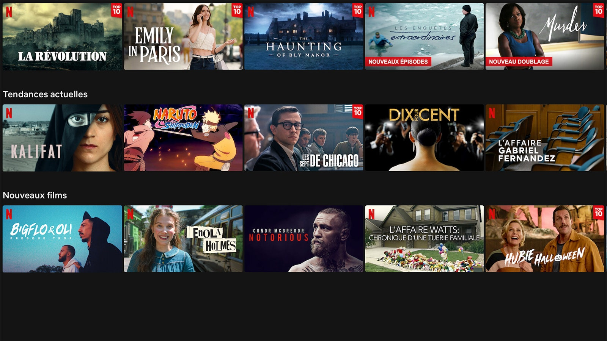

NETFLIX
Netflix Essentiel au tarif de 8,99€/mois : Netflix sur un seul écran en même temps en qualité standard (SD - 720 x 576 pixels), débit minimum conseillé de 0,8 Mb/s, voire 2 Mb/s
Netflix Standard au tarif de 13,49€/mois : Netflix sur 2 écrans à la fois jusqu'en HD (1280 x 720 points), débit de 5 Mégabits/seconde conseillé en HD.
Netflix Premium au tarif de 17,99€/mois : Netflix sur 4 écrans simultané jusqu'en HD et même Ultra HD 4K (3840 x 2160 pixels sur les écrans compatibles), débit minimum de 25 Mégabits/seconde pour la ultra HD.
Installée
Les séries et les films dont tout le monde parle sont sur Netflix !
Nous proposons des séries, des films, des documentaires et des stand-up primés. En prime, grâce à notre application mobile, vous pouvez regarder Netflix partout, en voyage, dans les transports ou juste pendant une pause.
Netflix a tout pour plaire :